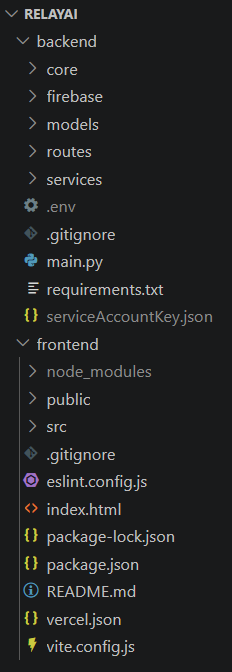
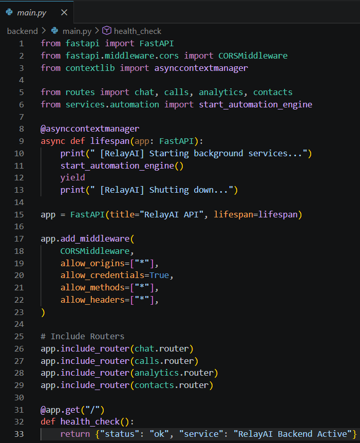
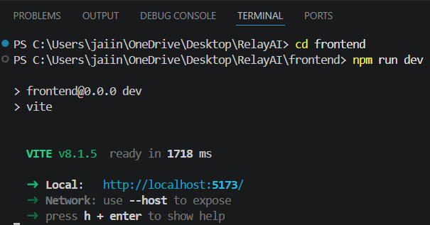
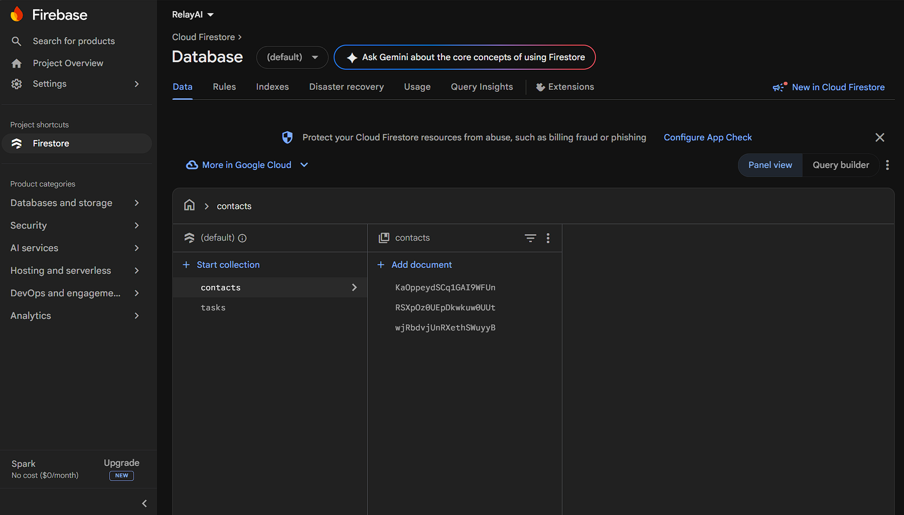

Training Company: Auribises Technologies
Trainer: Mr. Ishant Kumar
Today's session marked the beginning of the final capstone project, Relay AI. Instead of continuing with the Streamlit-based Delegate AI application, we started developing a production-style AI application using a modern technology stack consisting of React for the frontend, FastAPI for the backend, and Google Firestore as the cloud database. The objective was to redesign the earlier project using technologies commonly adopted in modern web development while preserving the intelligent task delegation workflow developed during previous sessions.
Delegate AI served as the prototype for the new application. During today's session, the project structure was redesigned to separate the frontend and backend into independent applications. This separation provides better scalability, improves maintainability, and follows the architecture commonly used in production systems where client-side interfaces communicate with backend APIs over HTTP.

The backend project was initialized using FastAPI. Compared to the earlier Streamlit implementation, FastAPI provides a dedicated framework for building RESTful APIs with excellent performance, automatic API documentation, asynchronous request handling, and clean routing mechanisms. The backend will become the core service responsible for AI processing, task management, and communication with external services.

Alongside the backend, a React application was created to provide a modern user interface. React's component-based architecture enables reusable UI elements and efficient state management while interacting with backend APIs. This migration replaces the earlier Streamlit interface and provides greater flexibility for developing scalable web applications.

The project's database layer was migrated from MongoDB Atlas to Google Firestore. Firestore stores information as collections and documents while providing real-time synchronization, cloud hosting, and easy integration with Google Cloud services. This migration lays the foundation for developing a more scalable and cloud-native version of Relay AI.

By the end of the session, the complete architecture of Relay AI had been planned. The React frontend will communicate with the FastAPI backend through REST APIs, while the backend will interact with Firestore, AI models, and additional external services. This layered architecture separates presentation, business logic, and data management into independent components, making the application easier to maintain and extend.
Complete the initial setup of the React frontend, FastAPI backend, and Firestore integration in preparation for implementing the application's core functionality during the following sessions.
Relay AI is developed as two independent repositories following a modern full-stack architecture:
Today's session represented an important transition from building prototypes to developing production-style software. Migrating Delegate AI into Relay AI demonstrated how the same application can be redesigned using industry-standard technologies such as React, FastAPI, and Firestore. This architecture not only improves scalability but also aligns more closely with the technologies used in professional software development.
In the next session, the core functionality of Relay AI will begin to take shape as the frontend and backend are connected and the application's business logic is progressively implemented.